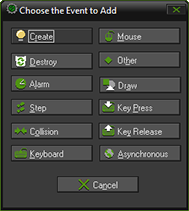
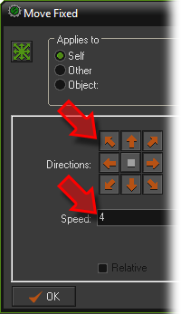
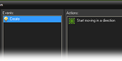

Tutorial
Page 7 of 15
The Create Event
The rest of the object form is taken up by two windows : one for adding events, and one for adding actions to those events. With the buttons below the events window you can add events, delete events or change events, of
which there are a large number of different ones you can use, but you normally need just a few in your game.
Next to the events there is an empty list of actions that must be performed for the selected event (if any), and at the right of this list that are a number of tabbed pages with little icons. These icons represent the different actions
and in total there are close to 100 different actions you can choose from. If you hold your mouse above one of the icons a short description of the corresponding action is given in a tooltip. You can drag actions from the tabbed
pages at the right to the action list to make them happen when the event occurs.
We are now going to define what should happen when an instance of the clown object is first created. In this case we want the clown to start moving in an arbitrary direction so proceed with the following:
- Press the Add Event button. The Event Selector, as shown below, will appear.

- Click on the Create Eventbutton. The create event is now added to the list of events, and it is automatically selected (with a blue highlight).
- Next you need to include a Move Fixed action in the list of actions. To this end, open the Move tab and then press and hold the mouse on the action image with the eight green arrows in the page at the
right, drag it to the empty actions list, and release the mouse. An action form is shown asking for information about the action.

- In the action form for the Move Fixed action you can indicate in which direction the instance should start moving. Select all eight directions (not the middle one which corresponds to no motion), and note
that the selected directions turn red. When multiple directions are selected one is chosen at random when the event is run. Also set the Speed to 4.

- Press OK to indicate that we are ready with this action.
You have now specified behavior that must be executed when an instance of the clown object is created, by adding the event, including an action, and setting the action properties. The object properties form for the clown object should
now look like this:

Click on the Next button to go to the next page of the tutorial.